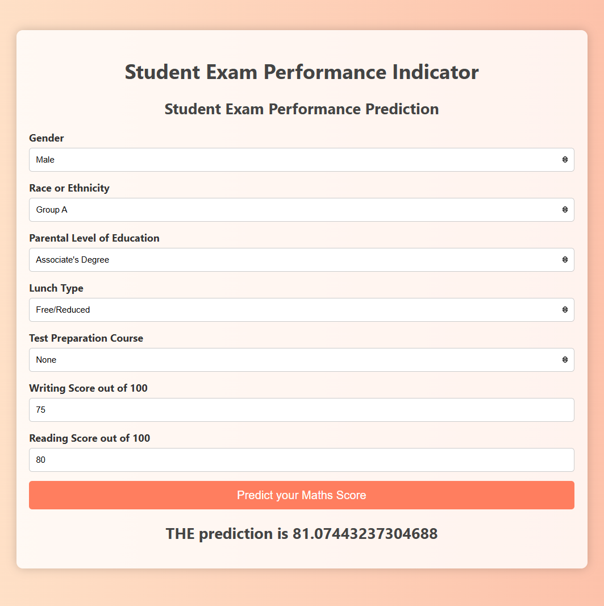
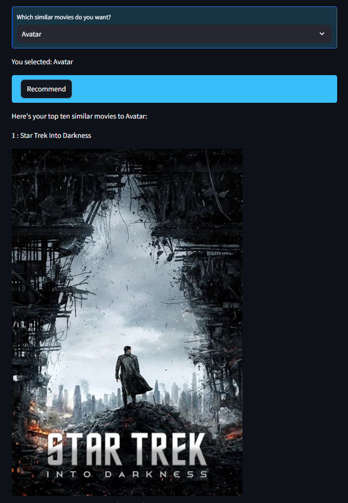
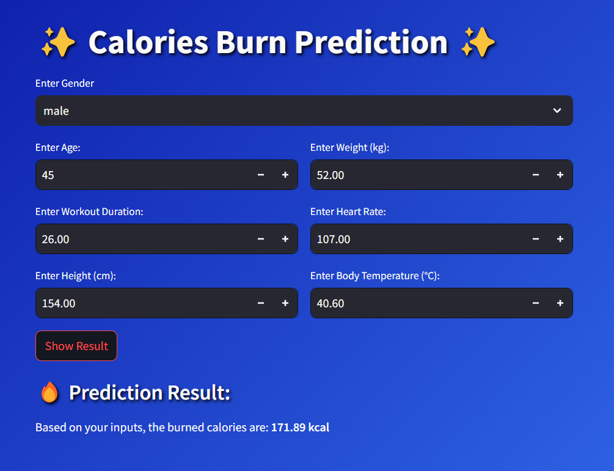
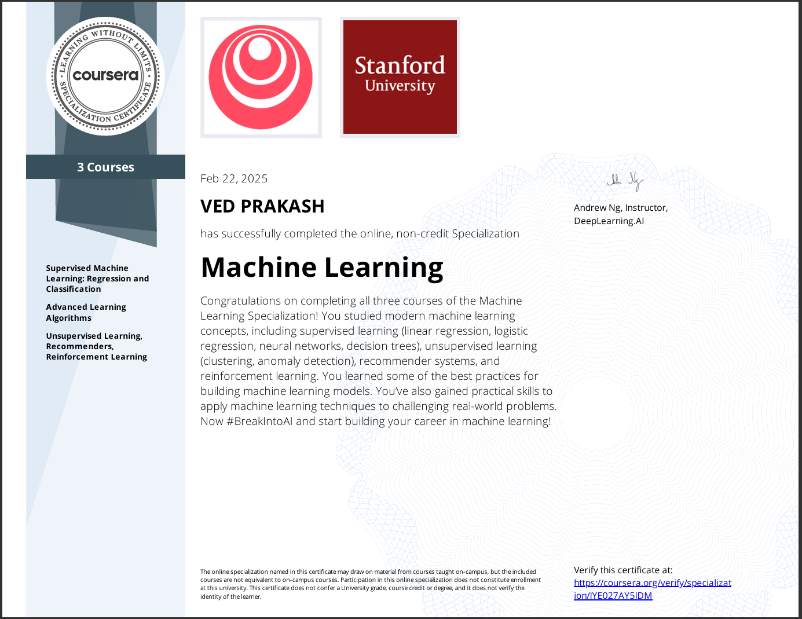
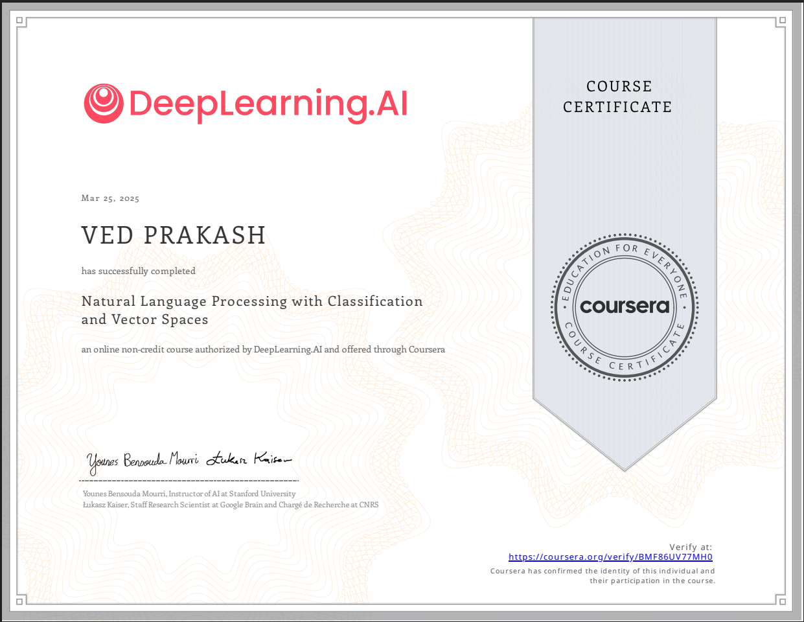
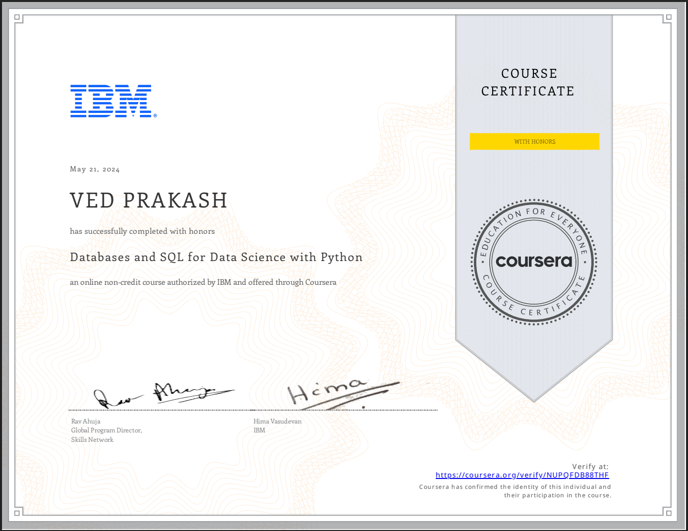

Hi! I'm Ved Prakash
A highly motivated and analytical mathematics Master's student at NIT Silchar, I possess a strong foundation in mathematical principles and a keen interest in their practical applications. My academic pursuits have cultivated a rigorous problem-solving approach and a deep understanding of complex systems. I am eager to transition my skills into a career as a Data Scientist/ Machine Learning Engineer, where I can leverage my mathematical expertise to develop innovative solutions and drive data-driven insights.
Take a look!
Explore my site
My Projects

Student Performance Predictor
This project predicts students' math scores using demographic and academic factors such as gender, race or ethnicity, parental level of education, lunch type, test preparation course completion, and scores in writing and reading (both out of 100). By applying machine learning techniques, the model aims to identify patterns and provide insights that contribute to understanding and improving students' academic performance.
Tools: Python, Streamlit, Numpy, Pandas, Scikit-learn

Movie Recommender System
The Movie Recommender System is a machine learning project that provides personalized movie recommendations based on user preferences and historical data. This project utilizes collaborative filtering and content-based filtering techniques to suggest movies that users are likely to enjoy. By implementing this system, I aimed to enhance user experience and engagement in movie selection.
Tools: Python, Scikit-learn, Streamlit

Calories Burn Prediction
This project aims to predict the number of calories burned based on various factors such as Gender, Age, Weight, Height, Workout Duration, Heart Rate and Body Temperature. By leveraging machine learning techniques, it seeks to provide accurate and insightful calorie estimations, which can help users in managing fitness and health goals effectively.
Tools: Python, Numpy, Pandas, Scikit-learn
My Certificates

Successfully earned after completing the three-course Machine Learning Specialization on Coursera, taught by Andrew Ng. The courses included:
- Supervised Machine Learning (Regression and Classification): Covering foundational algorithms for regression and classification tasks.
- Advanced Learning Algorithms: Exploring neural networks, ensemble methods, and deeper machine learning techniques.
- Unsupervised Learning, Recommenders, Reinforcement Learning: Delving into clustering, recommendation systems, and reinforcement learning concepts.

Successfully earned through Coursera, this course dives deep into the fundamentals of natural language processing (NLP). It covers essential topics such as text classification, feature extraction with vector spaces, and practical techniques for analyzing and processing textual data. Through hands-on projects, learners gain valuable skills to apply NLP methods in real-world scenarios using innovative tools and approaches.
Tools: Python, Scikit-learn, Streamlit

Earned upon completing the Coursera course, this program focuses on foundational skills in databases and SQL, essential for data science. It covers key topics such as creating and managing databases, querying data using SQL, and integrating Python for advanced data analysis. The course emphasizes practical, hands-on experience, enabling learners to handle real-world data problems effectively.
100 Days of Code
The Complete Python Pro Bootcamp.
Tools: Python, Tkinter, GitHub, etc.